Groupe Musiciens : Harmonie (catalogue et fiches) et Accords11 constats : 2 avec propositions dessinées, 9 finitions en tableauSourcedocs/audit-design-2026-11-02.md
On garde la direction actuelle : encre pour l'action, --secondary pour les pastilles, cartes raised, bleu des accords --chord-color gelé (#3f63cf en clair, #8fb0ff en sombre). Rien ici ne touche une zone gelée. Chaque proposition est dessinée avec les jetons de globals.css, la police système du site, les libellés de fr.json et zh-CN.json et les vrais titres du catalogue ; la recommandée porte la marque verte et la phrase du pourquoi. Les captures « avant » sont prises sur le site en clair : en sombre, elles sont atténuées pour ne pas éblouir. Sur un écran étroit, un bouton « Agrandir à la taille réelle » apparaît sous chaque dessin ou capture rétréci.
Ordre. Deux constats « de près » avec propositions dessinées : musiciens-2 (les filtres prennent plus de place que la liste), puis musiciens-10 (contenu des fiches resté en français dans l'interface 中文). Les neuf finitions sont en tableau à la fin. Aucun constat « premier coup d'œil » dans ce groupe.
À confirmer. Deux points portent la marque : le doublon Théorie / RD-2000 au téléphone (musiciens-2, vu sur capture mais jamais ouvert sur un appareil) et les listes de 36 px (musiciens-11, lu dans le code seulement). Les menus, feuilles et mouvements ne figurent pas sur les captures statiques : ils sont dessinés ici pour la première fois.
musiciens-2de près
Les filtres prennent plus de place que la liste
Avant
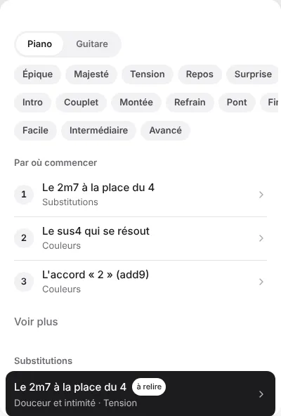
ordinateur/harmonie-fr-clair.png · x 288, y 104, 400 × 592
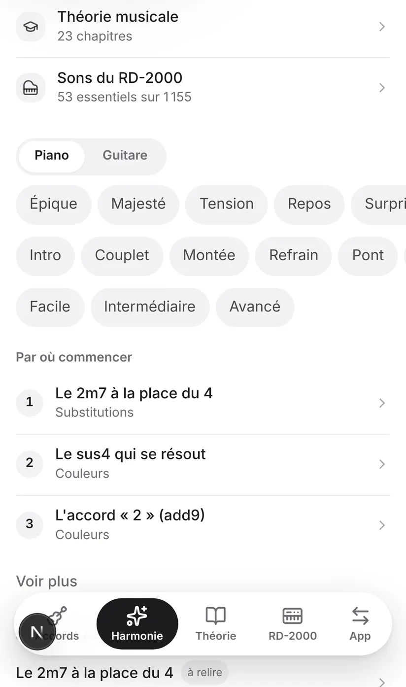
telephone/harmonie-fr-clair.png · x 0, y 420, 1082 × 1830 (jusqu'à la barre d'onglets)
La carte liste fait 592 px de haut ; 528 px passent avant la première fiche (instrument, trois rangées de pastilles, « Par où commencer », « Voir plus »), soit 89 % de la carte. La première fiche n'apparaît qu'en bas de la carte.
Au téléphone, on voit les lignes « Théorie musicale » et « Sons du RD-2000 », l'instrument, les trois rangées de pastilles et les trois étapes. La première famille tombe sous la barre d'onglets : elle masque l'intitulé « Substitutions ».
À confirmerPoint nouveau : sur téléphone, la barre d'onglets du bas montre déjà Théorie et RD-2000. Les deux lignes du haut (Catalogue.tsx:150-174) sont donc un doublon d'environ 104 px CSS.
A
Un seul bouton « Filtres »
Téléphone · repos, première page (lignes Théorie et RD-2000 retirées, comme en B et C)
AppMusiciensBack-Office
Harmonie
Des idées pour réharmoniser, au piano et à la guitare.
PianoGuitareFiltres
Par où commencer
1Le 2m7 à la place du 4Substitutions
2Le sus4 qui se résoutCouleurs
3L'accord « 2 » (add9)Couleurs
Voir plus
Substitutions
Le 2m7 à la place du 4à relireDouceur et intimité · Tension
Le 6m à la place du 1 répétéà relireDouceur et intimité · Tendresse et nostalgie
Le 4 à la place du 2mà relireLumière et espérance · Joie et élan
La cadence rompueà relireSurprise · Tension · Tendresse et nostalgie
AccordsHarmonieThéorieRD-2000App
Téléphone · 2 filtres actifs (Joie et élan, Montée) : la liste porte son compte, « 12 fiches »
AppMusiciensBack-Office
Harmonie
Des idées pour réharmoniser, au piano et à la guitare.
PianoGuitareFiltres (2)
Joie et élanMontée
12 fiches
Substitutions
Le 4 à la place du 2mà relireLumière et espérance · Joie et élan
Basses
La basse qui monteà relireJoie et élan · Lumière et espérance
Le 1 sur 3 pour relierà relireJoie et élan · Lumière et espérance
AccordsHarmonieThéorieRD-2000App
Téléphone · la feuille monte du bas : « Voir 12 fiches » = le compte de la liste
AppMusiciensBack-Office
Harmonie
Des idées pour réharmoniser, au piano et à la guitare.
PianoGuitareFiltres (2)
Filtres
Sensation
ÉpiqueMajestéTensionReposSurpriseSuspendu et planantÉmerveillementDouceur et intimitéTendresse et nostalgieGravité et recueillementLumière et espéranceJoie et élan
Moment
IntroCoupletMontéeRefrainPontFinTransition
Niveau
FacileIntermédiaireAvancé
Voir 12 fiches
中文 · la feuille au complet : 感觉 / 段落 / 难度, « 查看 12 张卡片 » (libellés nouveaux : 筛选, 查看 12 张卡片)
和声
为钢琴和吉他提供的重新配和声灵感。
钢琴吉他筛选（2）
筛选
感觉
史诗庄严张力安息意外悬浮飘渺惊叹柔和亲密温柔怀旧肃穆默想光明盼望喜乐激昂
段落
前奏主歌过门副歌桥段结尾过渡
难度
简单中等进阶
查看 12 张卡片
Ordinateur · volet de liste, bulle ancrée au bouton (aucun filtre choisi : « Voir 69 fiches » = toutes les fiches ; parcours replié comme en B)
PianoGuitareFiltres
Par où commencer10 fiches dans l'ordre
Substitutions
Le 2m7 à la place du 4à relireDouceur et intimité · Tension
Le 6m à la place du 1 répétéà relireDouceur et intimité · Tendresse et nostalgie
Le 4 à la place du 2mà relireLumière et espérance · Joie et élan
La cadence rompueà relireSurprise · Tension · Tendresse et nostalgie
Sensation
ÉpiqueMajestéTensionReposSurpriseSuspendu et planantÉmerveillementDouceur et intimitéTendresse et nostalgieGravité et recueillementLumière et espéranceJoie et élan
Moment
IntroCoupletMontéeRefrainPontFinTransition
Niveau
FacileIntermédiaireAvancé
Voir 69 fiches
Français · filtres actifs
PianoGuitareFiltres (2)
Joie et élanMontée
Ce qui change
Une rangée : Piano | Guitare à gauche, pastille « Filtres » (中文 « 筛选 ») à droite, 28 px de haut à la souris, 40 px au doigt, en --secondary.
Filtres actifs : la pastille passe en encre, « Filtres (2) » (« 筛选（2） »), et les choix s'affichent dessous en pastilles « Montée ✕ ».
Téléphone : une feuille monte du bas (ressort sans rebond, damping 1, response 0,35 ; on la ferme en la glissant vers le bas ; fondu de 200 ms en mouvement réduit). Les trois groupes passent à la ligne, titrés « Sensation / Moment / Niveau » (« 感觉 / 段落 / 难度 »), avec un bouton « Voir 12 fiches » (« 查看 12 张卡片 »).
Ordinateur : une bulle ancrée au bouton, qui s'ouvre depuis lui.
Gain
Filtres : −120 px à l'ordinateur, −118 px au téléphone (parcours replié et doublon retiré : voir le tableau sous les pistes).
Pour
La liste remonte au maximum.
Contre
Revient sur la réponse 5 du 05/10 (des rangées qui défilent). Le vocabulaire des sensations, qui fait le caractère du catalogue, disparaît derrière un tap de plus.
Effort
Moyen (feuille et bulle à brancher).
B
La sensation reste à l'écran, Moment et Niveau deviennent deux menus
Recommandée
Téléphone · première page, sans les lignes Théorie et RD-2000 (les pastilles de sensation s'estompent au bord : fondu de musiciens-4)
AppMusiciensBack-Office
Harmonie
Des idées pour réharmoniser, au piano et à la guitare.
PianoGuitareMomentNiveau
ÉpiqueMajestéTensionReposSurpriseSuspendu et planantÉmerveillementDouceur et intimitéTendresse et nostalgieGravité et recueillementLumière et espéranceJoie et élan
Par où commencer
1Le 2m7 à la place du 4Substitutions
2Le sus4 qui se résoutCouleurs
3L'accord « 2 » (add9)Couleurs
Voir plus
Substitutions
Le 2m7 à la place du 4à relireDouceur et intimité · Tension
Le 6m à la place du 1 répétéà relireDouceur et intimité · Tendresse et nostalgie
Le 4 à la place du 2mà relireLumière et espérance · Joie et élan
La cadence rompueà relireSurprise · Tension · Tendresse et nostalgie
AccordsHarmonieThéorieRD-2000App
Téléphone · le menu « Moment » ouvert au doigt : lignes de 44 px, 8 lignes
AppMusiciensBack-Office
Harmonie
Des idées pour réharmoniser, au piano et à la guitare.
PianoGuitareMomentNiveau
ÉpiqueMajestéTensionReposSurpriseSuspendu et planantÉmerveillementDouceur et intimitéTendresse et nostalgieGravité et recueillementLumière et espéranceJoie et élan
Par où commencer
1Le 2m7 à la place du 4Substitutions
2Le sus4 qui se résoutCouleurs
3L'accord « 2 » (add9)Couleurs
Voir plus
Substitutions
Le 2m7 à la place du 4à relireDouceur et intimité · Tension
Le 6m à la place du 1 répétéà relireDouceur et intimité · Tendresse et nostalgie
Le 4 à la place du 2mà relireLumière et espérance · Joie et élan
La cadence rompueà relireSurprise · Tension · Tendresse et nostalgie
AccordsHarmonieThéorieRD-2000App
Tous les momentsIntroCoupletMontéeRefrainPontFinTransition
Téléphone · valeurs longues (« Transition », « Intermédiaire ») : la ligne ne tient plus en 380 px, les pastilles passent à la ligne
AppMusiciensBack-Office
Harmonie
Des idées pour réharmoniser, au piano et à la guitare.
PianoGuitareTransitionIntermédiaire
ÉpiqueMajestéTensionReposSurpriseSuspendu et planantÉmerveillementDouceur et intimitéTendresse et nostalgieGravité et recueillementLumière et espéranceJoie et élan
Par où commencer
1Le 2m7 à la place du 4Substitutions
2Le sus4 qui se résoutCouleurs
3L'accord « 2 » (add9)Couleurs
Voir plus
Ordinateur · volet de liste, menu « Moment » ouvert (lignes de 34 px à la souris), parcours replié
PianoGuitareMomentNiveau
ÉpiqueMajestéTensionReposSurpriseSuspendu et planantÉmerveillementDouceur et intimitéTendresse et nostalgieGravité et recueillementLumière et espéranceJoie et élan
Par où commencer10 fiches dans l'ordre
Substitutions
Le 2m7 à la place du 4à relireDouceur et intimité · Tension
Le 6m à la place du 1 répétéà relireDouceur et intimité · Tendresse et nostalgie
Le 4 à la place du 2mà relireLumière et espérance · Joie et élan
La cadence rompueà relireSurprise · Tension · Tendresse et nostalgie
Couleurs
L'accord « 2 » (add9)à relireLumière et espérance · Suspendu et planant
Le sus4 qui se résoutà relireTension · Repos
Le sus2, ouvert et flottantà relireSuspendu et planant · Émerveillement
Tous les momentsIntroCoupletMontéeRefrainPontFinTransition
Français · un choix fait, parcours déplié
RefrainNiveau
Par où commencer10 fiches dans l'ordre
中文 · les deux menus au complet (« 全部难度 » est nouveau, comme « 全部段落 »)
钢琴吉他段落难度
段落 · 8 lignes
全部段落前奏主歌过门副歌桥段结尾过渡
难度 · 4 lignes
全部难度简单中等进阶
从这里开始按顺序的 10 张卡片
Ce qui change
Rangée 1 : Piano | Guitare, puis deux pastilles-menus « Moment ▾ » et « Niveau ▾ » (« 段落 ▾ », « 难度 ▾ »). Un choix fait, la pastille l'affiche (« Refrain ▾ ») en encre ; le menu garde une option « Tous les moments » (« 全部段落 ») pour retirer le filtre.
Rangée 2 : les douze sensations, qui défilent avec un fondu (voir musiciens-4).
Sur deux volets, « Par où commencer » se replie en une seule ligne qui se déplie sur place : sous-ligne « 10 fiches dans l'ordre » (« 从这里开始 », « 按顺序的 10 张卡片 »), chevron qui pivote.
Au téléphone, on retire les lignes Théorie et RD-2000, en doublon avec la barre d'onglets À confirmer Le retrait et le repli sont dessinés aussi en A et C.
Valeur longue : si Piano | Guitare | Moment | Niveau ne tient pas en 380 px, les deux pastilles passent à la ligne (dessin « valeurs longues »), soit une ligne de plus (question ci-dessous).
Gain
Filtres : −80 px à l'ordinateur, −78 px au téléphone (parcours replié et doublon retiré : voir le tableau sous les pistes).
Pour
La question d'un musicien (« de la tension sur le pont ») reste à un tap. Moment n'a que 7 valeurs et Niveau 3 : un menu suffit.
Contre
Elle demande le menu unique du chantier 3 (« un seul menu déroulant »). Repli si ce chantier glisse : deux <select> natifs en forme de pastille, déjà utilisés pour Tonalité et Capo, à remplacer ensuite par le menu unique. Moment et Niveau se voient moins.
Effort
Moyen.
Pourquoi. C'est la seule piste qui garde la sensation à l'écran tout en rendant la liste visible au premier écran, au téléphone comme à 1 280 × 720. Il faut la coder avec le menu du chantier 3, pas avec un menu de plus.
Point de vigilance. Une fois A et C dessinés avec le même retrait du doublon et le même parcours replié, B n'est plus la piste qui libère le plus de place (filtres à l'ordinateur : A −120 px, B −80 px, C −80 px). Elle l'emporte parce que la sensation reste à l'écran, pas par le gain de place ; Moment et Niveau coûtent un tap de plus.
C
Une seule rangée qui défile, en trois groupes
Téléphone · première page (les pastilles s'estompent au bord : fondu de musiciens-4)
AppMusiciensBack-Office
Harmonie
Des idées pour réharmoniser, au piano et à la guitare.
PianoGuitare
FacileIntermédiaireAvancéIntroCoupletMontéeRefrainPontFinTransitionÉpiqueMajestéTensionReposSurpriseSuspendu et planantÉmerveillementDouceur et intimitéTendresse et nostalgieGravité et recueillementLumière et espéranceJoie et élan
Par où commencer
1Le 2m7 à la place du 4Substitutions
2Le sus4 qui se résoutCouleurs
3L'accord « 2 » (add9)Couleurs
Voir plus
Substitutions
Le 2m7 à la place du 4à relireDouceur et intimité · Tension
Le 6m à la place du 1 répétéà relireDouceur et intimité · Tendresse et nostalgie
Le 4 à la place du 2mà relireLumière et espérance · Joie et élan
La cadence rompueà relireSurprise · Tension · Tendresse et nostalgie
AccordsHarmonieThéorieRD-2000App
Ordinateur · volet de liste, parcours replié comme en B
PianoGuitare
FacileIntermédiaireAvancéIntroCoupletMontéeRefrainPontFinTransitionÉpiqueMajestéTensionReposSurpriseSuspendu et planantÉmerveillementDouceur et intimitéTendresse et nostalgieGravité et recueillementLumière et espéranceJoie et élan
Par où commencer10 fiches dans l'ordre
Substitutions
Le 2m7 à la place du 4à relireDouceur et intimité · Tension
Le 6m à la place du 1 répétéà relireDouceur et intimité · Tendresse et nostalgie
Le 4 à la place du 2mà relireLumière et espérance · Joie et élan
La cadence rompueà relireSurprise · Tension · Tendresse et nostalgie
Référence : l'état actuel dessiné de la même façon (instrument + trois rangées de pastilles) mesure 158 px à l'ordinateur et 158 px au téléphone ; l'audit donne 157 px à l'ordinateur sur le vrai site. Les gains communs (parcours, doublon) valent pour les trois pistes : ils ne départagent rien.
musiciens-10de près
Contenu des fiches resté en français dans l'interface 中文
Avant
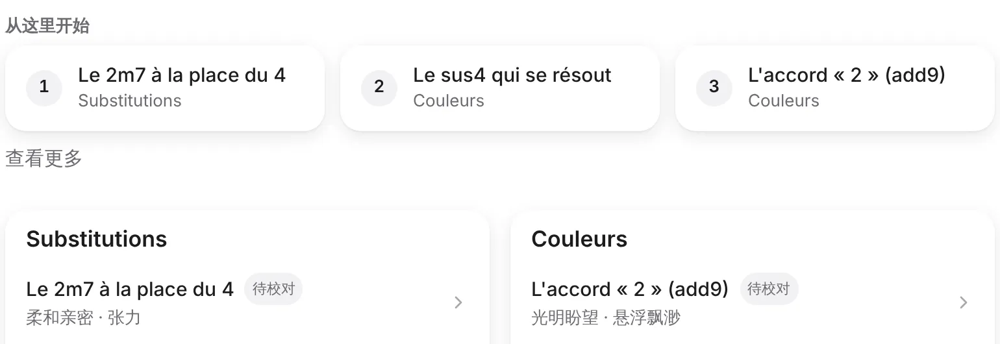
tablette/harmonie-zh-clair.png · x 40, y 770, 1540 × 530
Dans l'interface 中文, les cartes « 从这里开始 » portent des titres en français. Plus bas : « Substitutions », puis « Le 2m7 à la place du 4 » 待校对, avec la sous-ligne « 柔和亲密 · 张力 ». Français et chinois sont mêlés sur la même ligne.
La question est déjà ouverte au § 5 de l'audit.
A
Assumer le français et le dire
Recommandée · tout de suite
Téléphone · 中文 · lang="fr" posé, une ligne d'explication en 14 px
和声
为钢琴和吉他提供的重新配和声灵感。
卡片内容目前只有法文，中文翻译会按类别陆续补上。
从这里开始
1Le 2m7 à la place du 4Substitutions
2Le sus4 qui se résoutCouleurs
3L'accord « 2 » (add9)Couleurs
查看更多
Substitutions
Le 2m7 à la place du 4待校对柔和亲密 · 张力
Le 6m à la place du 1 répété待校对柔和亲密 · 温柔怀旧
Le 4 à la place du 2m待校对光明盼望 · 喜乐激昂
Tablette portrait · 中文 · lang="fr" posé, une ligne d'explication
和声
为钢琴和吉他提供的重新配和声灵感。
卡片内容目前只有法文，中文翻译会按类别陆续补上。
从这里开始
1Le 2m7 à la place du 4Substitutions
2Le sus4 qui se résoutCouleurs
3L'accord « 2 » (add9)Couleurs
查看更多
lang="fr" sur les titres, le parcours et le corps des fiches
Substitutions
Le 2m7 à la place du 4待校对柔和亲密 · 张力
Le 6m à la place du 1 répété待校对柔和亲密 · 温柔怀旧
Le 4 à la place du 2m待校对光明盼望 · 喜乐激昂
Couleurs
L'accord « 2 » (add9)待校对光明盼望 · 悬浮飘渺
Le sus4 qui se résout待校对张力 · 安息
Le sus2, ouvert et flottant待校对悬浮飘渺 · 惊叹
Ce qui change
lang="fr" sur les titres, les noms de famille, le parcours et le corps des fiches : la bonne police latine et une lecture vocale correcte.
Une ligne sous le sous-titre, en 中文 seulement : « 卡片内容目前只有法文，中文翻译会按类别陆续补上。 », en 14 px.
Pour
Honnête et immédiat.
Contre
Un musicien qui ne lit que le chinois ne peut toujours rien faire du catalogue.
Effort
Petit.
Pourquoi. A déclare la langue (police latine et lecture vocale justes) et dit la situation au lecteur : c'est ce qu'on règle tout de suite, dans la tranche des finitions.
Point de vigilance. A ne change presque rien à l'œil : une ligne d'explication, et le mélange du français et du chinois sur la même ligne reste tant que B n'est pas fait. L'effet de lang="fr" (police, lecture vocale) ne se voit pas sur le dessin.
B
Titres en deux langues, corps en français
Recommandée · ensuite
Téléphone · 中文 · titre chinois au-dessus, français dessous en 13 px, sensations en pastilles
和声
为钢琴和吉他提供的重新配和声灵感。
从这里开始
1用 2m7 代替 4Le 2m7 à la place du 4
2解决的挂四和弦Le sus4 qui se résout
3「2」和弦（add9）L'accord « 2 » (add9)
查看更多
代替和弦Substitutions
用 2m7 代替 4待校对Le 2m7 à la place du 4柔和亲密张力
用 6m 代替重复的 1待校对Le 6m à la place du 1 répété柔和亲密温柔怀旧
用 4 代替 2m待校对Le 4 à la place du 2m光明盼望喜乐激昂
Tablette portrait · 中文 · titre chinois au-dessus, français dessous en 13 px
和声
为钢琴和吉他提供的重新配和声灵感。
从这里开始
1用 2m7 代替 4Le 2m7 à la place du 4
2解决的挂四和弦Le sus4 qui se résout
3「2」和弦（add9）L'accord « 2 » (add9)
查看更多
代替和弦Substitutions
用 2m7 代替 4待校对Le 2m7 à la place du 4柔和亲密张力
用 6m 代替重复的 1待校对Le 6m à la place du 1 répété柔和亲密温柔怀旧
用 4 代替 2m待校对Le 4 à la place du 2m光明盼望喜乐激昂
色彩和弦Couleurs
「2」和弦（add9）待校对L'accord « 2 » (add9)光明盼望悬浮飘渺
解决的挂四和弦待校对Le sus4 qui se résout张力安息
开放而飘浮的挂二和弦待校对Le sus2, ouvert et flottant悬浮飘渺惊叹
À valider Les titres chinois du dessin sont des propositions, à relire par un musicien sinophone de l'équipe (par exemple « 解决的挂四和弦 » pour « Le sus4 qui se résout », qui se lit aussi « le sus4 résolu »).
Ce qui change
Le titre chinois au-dessus, le titre français dessous en 13 px --muted-foreground, comme le pinyin sous les titres de chants : « 用 2m7 代替 4 » / « Le 2m7 à la place du 4 ».
La ligne des sensations ne change pas de texte ; elle est dessinée en pastilles pour ne pas se confondre avec le titre français, qui est gris lui aussi.
Fichiers : un champ nom_zh dans docs/harmonie/*.md, build-harmonie, puis relancer scripts/build-fonts.py.
Pour
On reprend le côte-à-côte qui fait l'identité du site.
Contre
81 titres à traduire et à valider (69 fiches et 12 familles dans l'index actuel). Les fiches passent à trois lignes, donc plus hautes. Deux familles de l'index n'ont pas de traduction proposée : « Rythme harmonique » et « Boucles pour la prière libre ».
Effort
Moyen.
Pourquoi. B rend le catalogue utilisable en 中文 sans attendre la traduction complète.
C
Traduction complète, famille par famille
Reste planifiée
Téléphone · 中文 · une famille traduite, une pas encore
和声
为钢琴和吉他提供的重新配和声灵感。
从这里开始
1用 2m7 代替 4代替和弦
2解决的挂四和弦色彩和弦
3「2」和弦（add9）色彩和弦
查看更多
代替和弦
用 2m7 代替 4待校对柔和亲密 · 张力
用 6m 代替重复的 1待校对柔和亲密 · 温柔怀旧
用 4 代替 2m待校对光明盼望 · 喜乐激昂
Basses
La basse qui monte待校对喜乐激昂 · 光明盼望
Le 5 sur 7 vers le 1待校对安息 · 喜乐激昂
La basse qui descend待校对肃穆默想 · 安息
Tablette portrait · 中文 · une famille traduite, une pas encore
和声
为钢琴和吉他提供的重新配和声灵感。
从这里开始
1用 2m7 代替 4代替和弦
2解决的挂四和弦色彩和弦
3「2」和弦（add9）色彩和弦
查看更多
pas encore traduite : le français reste en secours, lang="fr"
代替和弦
用 2m7 代替 4待校对柔和亲密 · 张力
用 6m 代替重复的 1待校对柔和亲密 · 温柔怀旧
用 4 代替 2m待校对光明盼望 · 喜乐激昂
Basses
La basse qui monte待校对喜乐激昂 · 光明盼望
Le 5 sur 7 vers le 1待校对安息 · 喜乐激昂
La basse qui descend待校对肃穆默想 · 安息
Ce qui change
Traduction complète, famille par famille (prévue par docs/spec-harmonie.md:295).
Le français reste en secours, avec lang="fr".
Pour
Déjà prévue par la spec.
Contre
C'est un chantier de contenu, pas une tranche de code.
Effort
Gros.
Gravité « finition »
Finitions : une correction recommandée, une alternative
Identifiant
Constat
Correction recommandée
Alternative
musiciens-3 finition
Bande vide de 44 px et deux interrupteurs Piano / Guitare
À Catalogue.tsx:147, remplacer space-y-5 par flex flex-col gap-5 (un gap ignore les enfants en display:none) et pt-6 par pt-4 : la bande passe de 44 à 16 px. Puis retirer l'interrupteur de l'en-tête de fiche quand il y a deux volets (FicheHarmonie.tsx:116).
Garder plutôt celui de la fiche, à côté de « Au piano » qu'il change, et retirer celui de la liste sur deux volets.
Avant (capture)
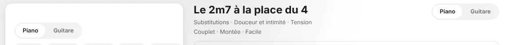
ordinateur-1440/harmonie-fr-clair.png · x 276, y 96, 1146 × 104 · de gauche à droite : bande vide de 44 px sous le haut du volet, interrupteur de la liste, titre de la fiche, interrupteur de l'en-tête de fiche
Après (dessin)
16 px
PianoGuitare
ÉpiqueMajestéTension
Le 2m7 à la place du 4
Substitutions · Douceur et intimité · Tension
Couplet · Montée · Facile
Une bande de 16 px au-dessus des volets, et un seul interrupteur Piano · Guitare : celui de la liste.
musiciens-4 finition
Rangées de pastilles coupées net
Brancher .fondu-lateral et useFonduLateral, qui existent déjà et servent dans SectionTabs.tsx et SongListClient.tsx, sur Pilules (Onglets.tsx:178). Cela corrige toutes les rangées du site ; le planning est à regarder aussi.
À la souris seulement, un bouton rond « › » de 28 px au bout de la rangée.
Avant (capture)
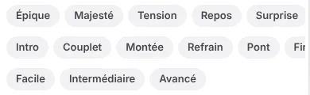
ordinateur/harmonie-fr-clair.png · x 300, y 190, 390 × 120
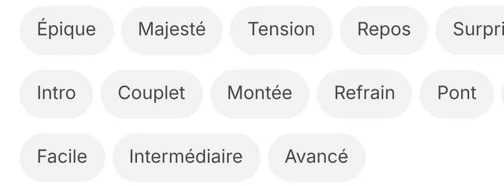
telephone/harmonie-fr-clair.png · x 0, y 900, 1082 × 400
Après (dessin)
ÉpiqueMajestéTensionReposSurpriseSuspendu et planantÉmerveillement
La rangée s'estompe au bord : rien n'est tranché (même fondu que dans les propositions de musiciens-2).
musiciens-5 finition
Coupures de ligne : « pouce » ou « 5. » seuls à la ligne, « La phrase « » en fin de ligne
Chaque doigt devient un élément insécable (« 4 auriculaire », « P pouce » ; « 4 小指 », « P 拇指 »).
text-wrap: pretty sur les p et li de [data-fiche] et sur les légendes des accords.
Une espace insécable à l'intérieur des guillemets français, posée au rendu dans TexteFiche.
Point de vigilance.text-wrap: pretty ne garantit pas qu'une ponctuation chinoise ne reste pas seule en début de ligne : la coupure « G）。 » en 中文 n'a été ni vue ni couverte. À regarder sur la fiche en 中文 au téléphone une fois la correction posée.
Présenter la légende des doigts en petite grille de deux colonnes.
Avant (capture)
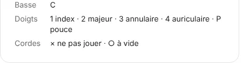
ordinateur/accords-fr-clair.png · x 288, y 734, 412 × 110 : « pouce » seul à la ligne
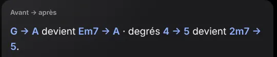
ordinateur/harmonie-fr-sombre.png · x 708, y 244, 540 × 112 : « 5. » seul à la ligne
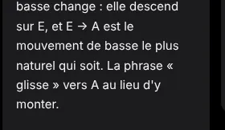
même capture · x 708, y 552, 280 × 162 : « La phrase « » en fin de ligne, puis « glisse » » à la suivante (nouveau)
Après (dessin)
Doigts1 index ·2 majeur ·3 annulaire ·4 auriculaire ·P pouce
G → A devient Em7 → A · degrés 4 → 5 devient 2m7 → 5.
… le mouvement de basse le plus naturel qui soit. La phrase « glisse » vers A au lieu d'y monter.
Chaque doigt reste d'un bloc, « 2m7 → 5. » aussi, et les guillemets français gardent le mot entre eux.
musiciens-6 finition
Colonnes déséquilibrées à 1 280 px
Poser @container sur la racine de la fiche et remplacer grid-cols-2 par [@container(min-width:640px)]:grid-cols-2. Le motif existe déjà dans CeDimanche.tsx:100. On décide d'après la largeur réelle du volet, plus d'après la disposition.
Garder deux colonnes et déplacer « Quand l'éviter » sous « Au piano ».
Avant (capture)
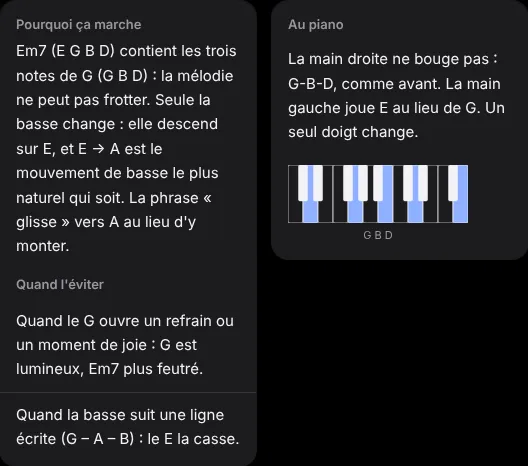
ordinateur/harmonie-fr-sombre.png · x 712, y 436, 528 × 466
Après (dessin)
Pourquoi ça marche
Em7 (E G B D) contient les trois notes de G (G B D) : la mélodie ne peut pas frotter. Seule la basse change : elle descend sur E, et E → A est le mouvement de basse le plus naturel qui soit. La phrase « glisse » vers A au lieu d'y monter.
Au piano
La main droite ne bouge pas : G-B-D, comme avant. La main gauche joue E au lieu de G. Un seul doigt change.
Quand l'éviter
Quand le G ouvre un refrain ou un moment de joie : G est lumineux, Em7 plus feutré.
Quand la basse suit une ligne écrite (G – A – B) : le E la casse.
Volet de 528 px (moins de 640 px) : une seule colonne, les cartes se suivent sans trou.
musiciens-7 finition
Titres coupés et trous sur tablette portrait
line-clamp-2 au lieu de truncate (Catalogue.tsx:259), et md:columns-2 avec break-inside-avoid sur les cartes (:252). Effet de bord : on lit alors colonne par colonne.
Garder la grille en items-stretch : les cartes voisines ont la même hauteur, et le trou devient de l'espace blanc dans la carte.
Avant (capture)
tablette/harmonie-zh-clair.png · x 826, y 3920, 760 × 200
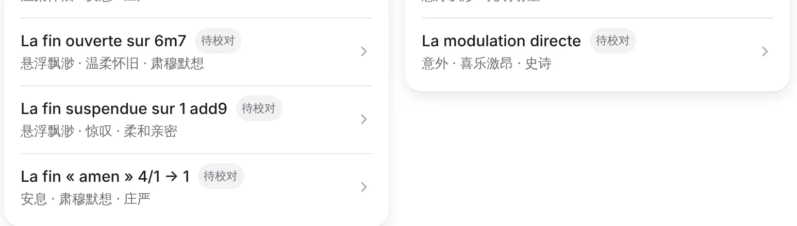
tablette/harmonie-zh-clair.png · x 40, y 4400, 1546 × 440 (zone élargie : la zone citée, x 826, y 4580, 760 × 260, ne montre que le trou)
Après (dessin)
Modulations dans un chant
+1 ton par le 5 de la nouvelle tonalité待校对史诗 · 喜乐激昂 · 光明盼望
La modulation directe待校对意外 · 喜乐激昂 · 史诗
Intros, interludes et fins
La fin ouverte sur 6m7待校对悬浮飘渺 · 温柔怀旧 · 肃穆默想
La fin suspendue sur 1 add9待校对悬浮飘渺 · 惊叹 · 柔和亲密
La fin « amen » 4/1 → 1待校对安息 · 肃穆默想 · 庄严
Titres sur deux lignes au lieu des points de suspension ; deux colonnes qui se lisent colonne par colonne.
musiciens-8 finition
Badge répété et « Voir plus » qui a l'air désactivé
Ne plus afficher le badge quand toutes les fiches visibles sont à relire, puisque le bandeau le dit déjà (c'est le cas des 69 fiches de l'index actuel).
Le libellé « Voir plus » devient « Voir les 7 autres » (« 查看其余 7 个 »), en --foreground avec un chevron bas de 16 px.
Même traitement à FicheHarmonie.tsx:244 : « Voir les 43 autres » (« 查看其余 43 首 »).
Inverser le marquage et ne signaler que les fiches validées, avec « relue » (« 已校对 »).
Avant (capture)
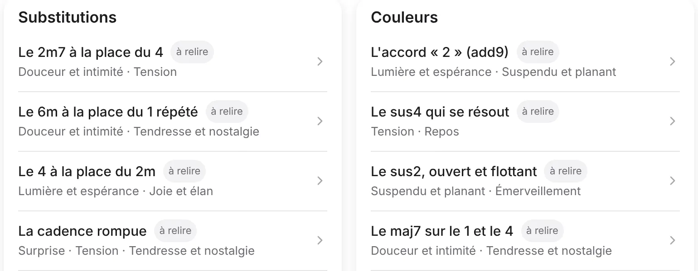
tablette/harmonie-fr-clair.png · x 40, y 1100, 1540 × 600
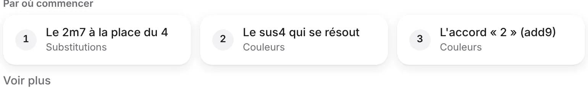
tablette/harmonie-fr-clair.png · x 40, y 800, 1540 × 260 (« Voir plus », en plus de la zone citée)
Après (dessin)
Les fiches sont en relecture : leur contenu peut encore changer.
Substitutions
Le 2m7 à la place du 4Douceur et intimité · Tension
Le 6m à la place du 1 répétéDouceur et intimité · Tendresse et nostalgie
Voir les 7 autres
查看其余 7 个
Plus de badge « à relire » sur chaque fiche : le bandeau le dit. « Voir les 7 autres » en --foreground, sans contour, avec un chevron bas de 16 px.
musiciens-9 finition
Textes de 10 à 12 px
Passer les légendes de text-xs (11 px) à text-sm (13 px) : PageAccords.tsx:87 et :143, PanneauAccord.tsx:199, et les légendes sous les diagrammes à FicheHarmonie.tsx:200 et :210. Si le badge reste, il monte à 12 px.
Pas de vraie alternative.
Avant (capture)
ordinateur/accords-fr-clair.png · x 288, y 198, 640 × 32
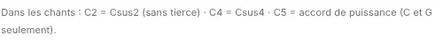
ordinateur/accords-fr-clair.png · x 720, y 758, 500 × 48 (les deux lignes de la légende)
Après (dessin)
Les notes s'écrivent en lettres : C = Do · D = Ré · E = Mi · F = Fa · G = Sol · A = La · B = Si · # = dièse · b = bémol
Dans les chants : C2 = Csus2 (sans tierce) · C4 = Csus4 · C5 = accord de puissance (C et G seulement).
À 13 px (text-sm) : la légende des accords tient en deux lignes dans 500 px.
musiciens-11 finition À confirmer
Listes Tonalité et Capo à 36 px au toucher
Lu dans le code seulement : la fiche Harmonie n'a été vue ni au téléphone ni à la tablette.
h-11 [@media(pointer:fine)]:h-9, la même règle que les pastilles (D9), à FicheHarmonie.tsx:137 et :182.
Remplacer ces deux <select> natifs par le menu unique du chantier 3.
Après (dessin)
Tonalité
D
au doigt : 44 px
Capo
0
au doigt : 44 px
Tonalité
D
à la souris : 36 px
À confirmer Dessin d'après le code : la fiche n'a jamais été ouverte sur un appareil.
musiciens-12 finition
Diagramme d'accord trop petit dans sa carte
Dans la variante carte seulement : 30 px entre deux cordes (au lieu de 24), cases de 36 px (au lieu de 30), points de 24 px (au lieu de 20), largeur d'environ 196 px (au lieu de 162). C'est environ 1,2 fois plus grand, à valider à l'œil. Le bleu de l'accord et des diagrammes (--chord-color) ne change pas.
Le SVG prend 100 % de la largeur, plafonné à 220 px, et viewBox met tout à l'échelle (les traits épaississent avec).
Avant (capture)
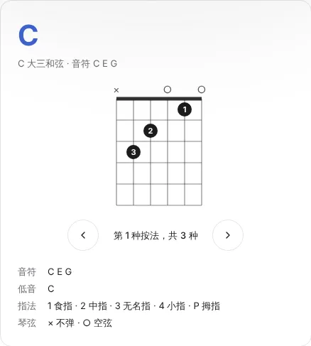
ordinateur-1440/accords-zh-clair.png · x 324, y 336, 438 × 487
Après (dessin)
Aujourd'hui · 162 px de largeProposé · 196 px de large (≈ 1,2 fois)
Dans la carte seulement : 30 px entre deux cordes, cases de 36 px, points de 24 px. Les deux grilles sont alignées en haut ; le bleu des diagrammes (--chord-color) ne change pas.
Ce que le directeur artistique n'a pas pu voir. La fiche Harmonie au téléphone et à la tablette : ni les listes de 36 px, ni la coupure « G）。 » en 中文. Harmonie en tablette paysage : capture non ouverte. À 1 280 px, sur ordinateur/harmonie-fr-clair.png, le volet de fiche a été pris pendant son fondu d'entrée : pour ce volet, fr-sombre a été lue à la place.
Ce que la planche ne montre pas. Les mouvements (ressort de la feuille et de la bulle, mouvement réduit) : ce sont des images fixes. Le menu unique du chantier 3 : il n'existe pas encore, les menus de B sont dessinés à sa place. Les dessins « après » des finitions viennent du code lu, pas d'un appareil. Les titres chinois de musiciens-10 B sont à faire relire. Le rendu sur appareil réel : seules les largeurs 390, 820, 1 180 et 1 440 ont été regardées.
Ce que coûte la tranche. Tranche « finitions » (3, 4, 5, 6, 7, 8, 9, 11, 12, plus 10 A) : petit effort. Fichiers : Catalogue.tsx, FicheHarmonie.tsx, Onglets.tsx, PanneauAccord.tsx, PageAccords.tsx, Diagrammes.tsx, TexteFiche, globals.css, fr.json et zh-CN.json. musiciens-2 B : effort moyen, lié au menu du chantier 3. musiciens-10 B : contenu à traduire et à valider, plus le script de build et les sous-ensembles de polices.
À décider
Une ligne par choix, avec la recommandation. Les trois premières sont les questions du directeur artistique.
musiciens-2Filtres d'Harmonie : faut-il garder les trois rangées qui défilent ? C'était la réponse 5 du 05/10. Question 1 du directeur artistiqueProposition : B, où seule la sensation reste en rangée ; à coder avec le menu du chantier 3, pas avec un menu de plus.
musiciens-2Retirer au téléphone les lignes Théorie et RD-2000, puisque la barre d'onglets les montre déjà ? Question 2Proposition : Oui. On y perd l'indication de progression (« 23 chapitres »), qu'on peut reporter sur la page Théorie. À confirmer sur un appareil.
musiciens-10Harmonie en 中文 : A seul, ou A puis des titres en deux langues (B) ? Question 3Proposition : A puis B, avec un relecteur sinophone pour valider les titres (dix familles proposées, deux sans traduction).
musiciens-2Valeur longue dans B (« Transition », « Intermédiaire ») : la ligne ne tient plus en 380 px. On passe à la ligne, ou on raccourcit la valeur ?Proposition : Passer à la ligne (dessiné) : une ligne de plus seulement quand deux valeurs longues sont choisies.
musiciens-2Si le menu unique du chantier 3 glisse, B attend-elle, ou prend-elle deux <select> natifs en pastille ?Proposition : Deux <select> natifs en pastille, remplacés ensuite par le menu unique (déjà le cas de Tonalité et Capo).
musiciens-10Si B est retenue, les sensations des fiches passent-elles en pastilles (dessiné) pour se distinguer du titre français, ou restent-elles une ligne de texte ?Proposition : Pastilles, seulement avec B ; le texte reste le même.
musiciens-3Quel interrupteur Piano / Guitare garde-t-on sur deux volets ?Proposition : Celui de la liste ; on retire celui de l'en-tête de fiche.
musiciens-7Titres sur deux lignes et colonnes : accepte-t-on de lire colonne par colonne ?Proposition : Oui, avec line-clamp-2 et md:columns-2.
musiciens-12Le diagramme de la carte passe-t-il à ≈ 196 px ?Proposition : Oui, à valider à l'œil sur la tranche de finitions (alternative : plafonné à 220 px).